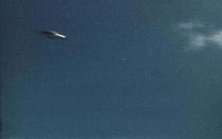
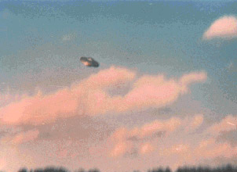

A Conflant-Sainte Honorine, Yvelines, des personnes
observent dans le ciel 1 boule lumineuse de la forme d'un ballon de rugby, d'abord immobile pendant
, puis se déplaçant très lentement alors qu'un bruit de brassage d'air que les témoins décrivent
comme un bruit de ventilateur. Cette boule s'éloigne plein ouest. L'observation se poursuit presque
avant d'être abandonnée par les témoins L'hypothèse de l'évolution de nuit d'un hélicoptère léger est cohérente avec les témoignages et ne doit pas être écartée bien qu'elle n'ait pas été
vérifiéeGEPAN: PAN
classé C.
Observation du 4 à Charleston

Observation du 4 à Charleston

Près de la base de l'USAF de Charleston, Caroline du Sud, William J. Herrmann, un mécanicien
auto de la région, voit et photographie un objet argenté en forme de disque manœuvrant de manière erratique.
Depuis une localité du sud-ouest de la Colombie, observation d'un phénomène en forme de 8, duuel se détache une
sorte de soucoupe qui laisse échapper une traînée de fumée ou de vapeur. On note des perturbations dans le réseau
électrique et dans le fonctionnement du téléphone Radio "Caracol", Bogota < "Colombie : Un ovni en 'huit' coupe le téléphone", Le Progr
ès, 6 avril 1980.
Au Chesnay, Yvelines, un témoin observe 1 boule lumineux
blanc montant par saccades dans le ciel et laissant derrière elle une traînée blanche. Après être monté, le
phénomène part à l'horizontale à très grande vitesse avant de disparaitre GEPAN : PAN
classé D.
À Louhans, Saône-et-Loire, 2 personnes circulant sur une
départementale aperçoivent 1 lumière rouge orangé qui se déplace en suivant le cours d'une rivière. Cette boule,
d'un diamètre estimé à 1,50 m, se déplace au ras du sol par bonds successifs de quelques mètres. Subitement cette
boule chute et s'immobilise à 80 m du véhicule. Une voiture arrivant en sens inverse, la boule prend de l'altitude
et disparaît à grande vitesse. Prise de panique, la conductrice fait demi-tour et se rend à la gendarmerie GEPAN: PAN
classé C.
Dans la région de Kembs, 2 témoins voient 1 boule
lumineuse immobile ou se déplaçant très lentement. Un autre femme déclare avoir été poursuivie par une sphère orange
alors qu'elle rentrait chez elle en voiture. 2 habitants de Kembs, alertés par la jeune femme affolée, observent
également le phénomène dont la couleur a viré en se rapprochant et qui a pris la forme d'une "soucoupe volante" "Une Alsacienne poursuivie par une sphère
orange...", Le Progrès, dimanche 13 avril 1980.
A Soultz-sous-Forêts, Bas Rhin, plusieurs témoins observent au
nord-ouest 1 boule rouge orangé d'un diamètre de 20 cm se déplaçant à grande vitesse et s'immobilisant. Le
phénomène, qui change de teintes et de forme, finit par changer de direction et s'éloigner vers le nord-est pour
disparaître complètement à Les conditions météorologiques étaient bonnes et permettaient une parfaite visibilité. Selon le GEPAN les mouvements observés ne permettent à priori pas de retenir un hypothèse astronomique pour ce phénomène qui reste inexpliqué.GEPAN: PAN classé D.
Dimanche de Pâques
A Vincennes, Val-de-Marne, un témoin se rendant à
pied à son travail est surpris par l'apparition dans le ciel de 1 boule de couleur verte très lumineuse qui se
déplace selon une trajectoire sud-nord à très basse altitude, suivie d'une gerbe d'étincelles jaunes.
L'observation a duré moins de 5 s et aucun bruit n'a été remarqué Selon le GEPAN cette personne a probablement été témoin d'une rentrée
atmosphériqueGEPAN: PAN
classé B.
À Metz, Moselle, depuis leur résidence 2 personnes observent
dans le ciel des points lumineux se déplaçant rapidement à haute altitude dans une direction nord-sud. Ces
points émettent une lumière blanche clignotante Selon le GEPAN il est probable qu'il s'agissait d'un passage d'avion en haute altitudeGEPAN: PAN
classé B.
Lundi de Pâques
(nouvelle heure, nuit du 13 au 14), la gendarmerie de Louhans (Saône-et-Loire) alerte un club
spécialisé : plusieurs témoins remarquent une sphère lumineuse de
couleur jaunâtre comme une grosse ampoule électrique. A A Montrond (Jura) un jeune
artisan dit avoir vu 2 sphères lumineuses qui l'ont suivi entre Champagnole et Montrond "Ovnis : Nouvelle série d'observations", Le
Progrès, 17 avril 1980.
Au Pellerin, Loire-Atlantique, 1 jardinier entend un
sifflement et est effrayé par une gerbe de feu et la chute à quelques m de lui d'un objet venant du nord-ouest. Il
n'entend aucun bruit d'impact et ne voit aucune fumée. Le phénomène a la grosseur d'un seau d'un diamètre de 20 cm
et les couleurs d'un arc-en-ciel. Les gendarmes appelés sur place constatent des traces au sol : sur un cercle de
100 m de diamètre le sol est recouvert d'une poudre blanchâtre et l'herbe est brûlée. Aucune trace d'impact du type
cratère n'est présente au sol. Le lendemain une pièce métallique sera retrouvée GEPAN: PAN
classé C.
Au Vezzani, Haute Corse, 1 témoin observe alors qu'il
s'apprête à rentrer chez lui 1 boule rouge-orangée de la grosseur d'un ballon de football s'approche vers lui et
s'arrète à 5 m de la maison. Ce phénomène brille fortement d'un éclat métallique. Réveillant d'autres personnes chez
lui, ils vont également observer cette boule lumineuse. Effrayés, ils décideront de rentrer se coucher. Le lendemain
aucune trace suspecte ne sera remarquée sur le devant de la porte GEPAN: PAN
classé C.